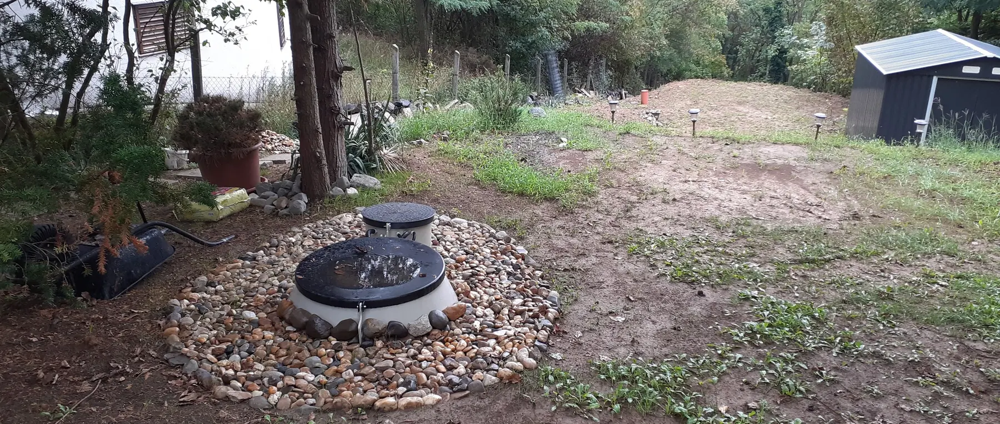

Melyik megoldás mikor megfelelő?
A technológiai különbségeket ismerve a következő kérdés az, hogyan alkalmazhatók a saját helyzetére. Ez az oldal helyzetekből indul, nem termékekből — és van, ahol a válasz az, hogy előbb adatot kell gyűjteni.

Hogyan olvassa
Vizsgálati irány, nem termékajánlás
Az alábbi helyzetek nem termék-hozzárendelések. Mindegyiknél az szerepel, melyik irányt érdemes először megvizsgálni, és mi az, ami ezt felülírhatja.
Van olyan helyzet is, ahol a következő feladat nem technológiaválasztás, hanem adatgyűjtés: közcsatorna-ellenőrzés, talajvíz-vizsgálat vagy laboradat beszerzése.
Helyzetek
Kilenc tipikus helyzet, és hogy melyikben mit érdemes először megnézni
-
Életvitelszerűen használt családi ház
Aktív biológiai rendszer vizsgálata
Az állandó, egyenletes terhelés az a működési feltétel, amire a biológiai tisztítás épül. A telek adottságai és a kezelt víz elhelyezése azonban felülírhatják ezt.
Ami módosíthatja: nincs folyamatos áram · a kezelt víz nem helyezhető el · a telek nem közelíthető meg géppel
-
Nyaraló, hétvégi ház, hosszú szezonális szünet
Oldómedencés irány vizsgálata
A hosszú, terhelés nélküli szakaszok a biológiai közösséget megviselik. A talajban zajló folyamat kevésbé érzékeny a szünetre — ha a tisztítómezőnek van elég helye, és a talaj engedi.
Ami módosíthatja: kötött talaj · magas talajvíz · nincs elég terület a tisztítómezőnek
-
Meglévő emésztő kiváltása
Először a meglévő rendszer felmérése
A csere nem technológiaválasztással kezdődik. A régi műtárgy állapota, mélysége és a bekötővezeték nyomvonala határozza meg, mi telepíthető a helyére és milyen földmunkával.
Ami módosíthatja: a régi rendszer megszüntetése engedélyezési kérdés is
-
Kis vagy nehezen szikkasztó telek
Aktív biológiai rendszer vagy zárt tároló
A tisztítómező területigénye itt a szűk keresztmetszet. Ha nincs rá hely, az oldómedencés irány kiesik — nem műszaki preferenciából, hanem geometriából.
Ami módosíthatja: ha a kezelt víz sem helyezhető el, a zárt tároló marad
-
Magas vagy erősen ingadozó talajvíz
Előbb talajvíz-vizsgálat, csak utána technológia
A mértékadó talajvízszint a beépítést és a vízelhelyezést egyaránt érinti. Ez nem feltétlenül kizáró ok, de külön műszaki kialakítást igényelhet.
Ami módosíthatja: a döntéshez mérés kell, nem becslés
-
Nincs villamos energia a telken
Oldómedencés irány vagy zárt tároló
Az aktív biológiai rendszer folyamatos áramellátást igényel. Áram nélkül ez az irány kiesik, függetlenül minden más adottságtól.
Ami módosíthatja: ideiglenes áramellátás nem elég a folyamatos üzemhez
-
Panzió, étterem, intézmény, kemping
Méretezett rendszer, nem házi berendezés
Itt a csúcsterhelés és a szennyvíz összetétele dönt, nem a létszám önmagában. A technológia a méretezés után következik.
Ami módosíthatja: konyhai szennyvíznél előkezelés is kell
-
Nem kommunális, ipari vagy technológiai szennyvíz
Laboratóriumi vizsgálat, szakértői út
A biológiai tisztítás kommunális szennyvízre való. Eltérő összetételnél a standard ajánlati út megszakad, és vizsgálat dönt.
Ami módosíthatja: ez nem online eldönthető kérdés
-
A közcsatorna kiépítése belátható időn belül várható
Először a fejlesztési ütemterv ellenőrzése
Ha a bekötés ütemezett és a dátum ismert, egy párhuzamos beruházás nehezen indokolható. Ígéret és ütemterv azonban nem ugyanaz.
Ami módosíthatja: kérjen kötelező érvényű időpontot az önkormányzattól